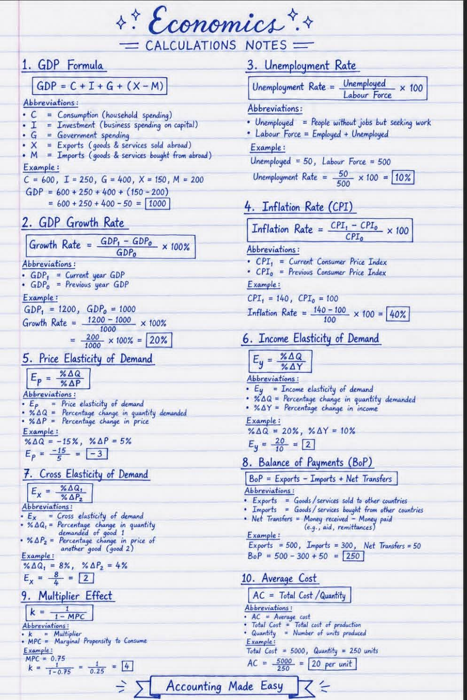

Hawa dingin Bandung menyusup di antara pilar-pilar kafe bergaya kolonial di Jalan Braga. Di sana, empat orang sahabat sedang duduk melingkar, menghadapi kepulan uap dari cangkir-cangkir kopi artisan. Mereka adalah Arjuna, sang analis risiko di firma investasi; Laras, manajer operasional manufaktur yang presisi; Dimas, pengusaha logistik yang dinamis; dan Bagas, seorang peneliti kebijakan publik yang kritis. Semuanya adalah alumni Teknik Industri, manusia-manusia yang dididik untuk mengoptimasi sistem dan mencari efisiensi di tengah kekacauan.
Diskusi sore itu bermula dari keluhan Dimas mengenai volatilitas pasar yang membuat estimasi produksinya berantakan. Laras, dengan tenang, mengeluarkan sebuah catatan dari tas kulitnya. "Kita tidak bisa hanya melihat lantai pabrik, Dim. Kita harus melihat struktur besar ekonomi," ucapnya sambil membentangkan selembar kertas bertajuk Economics Calculations Notes.

Gambar 1: Catatan Strategis Fundamental Ekonomi yang Menjadi Dasar Diskusi
Laras menunjuk poin pertama pada catatannya. "Lihat ini, Dim. GDP (Gross Domestic Product). Rumusnya klasik: GDP = C + I + G + (X - M). Sebagai orang Teknik Industri, kita sering terjebak hanya pada 'I' atau investasi modal pada mesin. Tapi, perhatikan 'C' atau Konsumsi rumah tangga. Jika spending masyarakat Bandung menurun karena ketidakpastian global, seberapa banyak pun kamu mengoptimasi lini produksi, barangmu tidak akan terserap pasar."
Arjuna menyela sambil menandai poin kedua. "Dan jangan lupa tentang GDP Growth Rate. Rumus (GDP1 - GDP0) / GDP0 * 100% itu bukan sekadar angka di berita pagi. Itu adalah indikator momentum. Jika angka pertumbuhannya 20%, itu sinyal ekspansi. Tapi jika melambat, kita harus melakukan inventory buffering. Kita tidak ingin terjebak dalam overproduction saat ekonomi sedang mendingin."
Bagas, yang fokus pada dampak sosial, mengarahkan telunjuknya ke poin ketiga: Unemployment Rate. "Kita harus peduli dengan rasio pengangguran terhadap angkatan kerja (Unemployed / Labour Force * 100). Mengapa? Karena tenaga kerja terampil di Bandung adalah raw material intelektual kita. Jika tingkat pengangguran naik, daya tawar perusahaan mungkin naik, tapi stabilitas sosial akan terganggu, yang pada akhirnya merusak iklim bisnis."
Laras mengangguk, lalu beralih ke poin keempat yang krusial bagi biaya produksi: Inflation Rate (CPI). "Ini yang sedang kita hadapi, Dim. Rumus (CPI1 - CPI0) / CPI0 * 100% menjelaskan mengapa harga bahan baku kita naik 40% tahun ini. Jika inflasi naik drastis, biaya hidup buruh naik, tuntutan upah meningkat, dan bill of materials kita membengkak. Kita harus melakukan hedging atau mencari substitusi material sebelum CPI melonjak lebih jauh."
Diskusi semakin mendalam saat mereka masuk ke ranah mikro yang sangat teknis bagi orang industri. "Poin kelima adalah kunci penetapan harga," ujar Arjuna. "Price Elasticity of Demand (Ep). Persentase perubahan kuantitas dibagi persentase perubahan harga. Jika nilainya -3, seperti di contoh catatan Laras, artinya produkmu sangat elastis. Naikkan harga sedikit saja, pelangganmu akan lari massal ke produk kompetitor."
Laras menambahkan tentang poin keenam, Income Elasticity of Demand (Ey). "Jika ekonomi membaik dan pendapatan masyarakat naik (Y), kita harus tahu apakah produk kita dianggap barang mewah atau kebutuhan pokok. Jika Ey positif dan besar, kita harus siap meningkatkan kapasitas produksi saat masa gajian tiba."
Dimas tampak mulai memahami pola besar ini. "Dan poin ketujuh, Cross Elasticity of Demand (Ex), menjelaskan kenapa saat harga jasa kurir sebelah naik, permintaan ke logistik saya justru melonjak. Itu karena produk kita adalah barang substitusi. Memahami angka 2 di catatan itu berarti kita punya keunggulan kompetitif jika kita bisa menjaga stabilitas harga kita."
Bagas kemudian menyoroti poin kedelapan, Balance of Payments (BoP). "Dim, bisnis logistikmu sangat bergantung pada ekspor dan impor. BoP = Exports - Imports + Net Transfers. Jika neraca pembayaran kita surplus seperti angka 250 di catatan ini, devisa kita aman. Tapi jika defisit, nilai tukar rupiah akan tertekan, dan biaya impor suku cadang trukmu akan mencekik."
Arjuna tersenyum, melihat betapa kuatnya keterkaitan poin-poin tersebut. "Jangan lupakan Multiplier Effect (k) di poin kesembilan. Rumus k = 1 / (1 - MPC). Setiap satu rupiah yang diinvestasikan pemerintah di infrastruktur Bandung, efeknya ke ekonomi akan berlipat ganda sesuai angka multiplier ini. Kita harus menaruh bisnis kita di titik-titik di mana multiplier-nya paling tinggi."
Sebagai penutup, Laras menekankan poin kesepuluh, jantung dari Teknik Industri: Average Cost (AC). "Ujung-ujungnya, Dim, adalah Total Cost / Quantity. Kita belajar economies of scale. Di catatan ini, AC adalah 20 per unit. Tugas kita sebagai industrial engineer adalah terus menekan angka ini tanpa mengorbankan kualitas. Tapi sekarang kita tahu, AC tidak hanya dipengaruhi oleh mesin, tapi juga oleh poin 4 (inflasi) dan poin 1 (permintaan agregat)."
Hujan di luar mulai mereda, meninggalkan aroma tanah basah yang segar. Keempat sahabat itu kini memandang catatan Laras bukan lagi sebagai teori membosankan, melainkan sebagai peta navigasi di tengah badai ekonomi. Mereka menyadari bahwa kecerdasan teknik tanpa pemahaman ekonomi adalah buta, dan kebijakan ekonomi tanpa optimasi teknik adalah hampa.
Bandung, dengan segala dinamikanya, adalah laboratorium hidup bagi mereka. Sambil menutup diskusi, Dimas merasa bebannya terangkat. Ia kini memiliki parameter yang jelas untuk menghitung ulang strategi bisnisnya. Mereka berempat berjanji untuk terus berkolaborasi, memastikan bahwa industri di kota mereka tidak hanya sekadar bertahan, tapi mampu memimpin di kancah nasional.